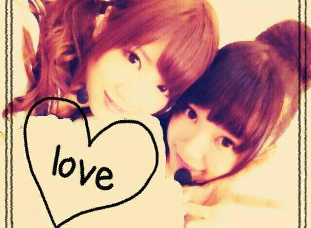
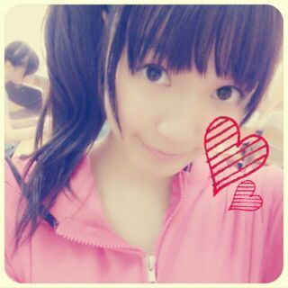
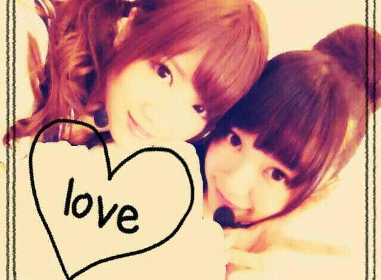
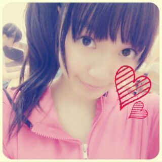

| 2013/08 24 Sat | ひめたん(*>ω<*)そ の331 |
公演２日目 福岡終わりました！
来てくださったみなさん
本当にありがとー( ^ω^ )/
はじめましての方は
乃木坂ライブいかがでしたかなー？
福岡ライブ楽しかったです！
広島から見に来てくださった方も
いらっしゃったのかな。
冒険女子宣言を執行するべく
今回の公演は
昼...サイドポニテ
夜...お団子
でした◎
＼夜の部 お団子／

＼昼の部 サイドポニテ／

お団子はメンバーで好評だったん///
ここまで４公演 全部違うヘアできました
ここまで４公演 全部違うヘアできました
ここまで４公演...
よ、よーし次は何しよっかなー♪
せいたんかわゆす( ^ω^ )るん
最近せいたんとじゃれあい楽しーんだよー
せいたんせいたんブログ読んだぞ照れたぞー
さて、福岡は
地元からは一番近い会場ということもあって
勝手にただいま感を味わってた＊
ただいまー∩^ω^∩
そしてみさみさとも言ってたのが
なんか...初心を忘れずにとはこのことだろうかー
ってそーんな気持ちになりました
とりあ福岡でライブ出来てよかった！
福岡のみなさん あたたかく迎えてくれて
本当にありがとうございましたっ
みなさん、大好きっちゃ！
かなりんびーむやばたんやばたん////
かなりんのハーフアップくるくるも
ハーフお団子かなりんも
全部かわいかったー♪
そうそう楽天スーパーセール！
このたび実行委員になってCMも撮ったんだよー
ちょっとだけどみーんなうつってるから
よかったら探してみてね☆ お願いムービー作ったりいろいろしたから
楽天スーパーセールのホームページに
飛んでみてくださーい( ω )
そして前回のブログは
あたたかいコメントありがとうございましたっ
今はパワーをいただくばっかりで
何もお返しできてないかもしれないけど
３年目も頑張りますっ(｀・ω・´)/
これからもよろしくねー♪
まーいつものことだけど
今日のブログとっ散らかってんなー！
来てくださったみなさん
本当にありがとー( ^ω^ )/
はじめましての方は
乃木坂ライブいかがでしたかなー？
福岡ライブ楽しかったです！
広島から見に来てくださった方も
いらっしゃったのかな。
冒険女子宣言を執行するべく
今回の公演は
昼...サイドポニテ
夜...お団子
でした◎
＼夜の部 お団子／

＼昼の部 サイドポニテ／

お団子はメンバーで好評だったん///
ここまで４公演 全部違うヘアできました
ここまで４公演 全部違うヘアできました
ここまで４公演...
よ、よーし次は何しよっかなー♪
せいたんかわゆす( ^ω^ )るん
最近せいたんとじゃれあい楽しーんだよー
せいたんせいたんブログ読んだぞ照れたぞー
さて、福岡は
地元からは一番近い会場ということもあって
勝手にただいま感を味わってた＊
ただいまー∩^ω^∩
そしてみさみさとも言ってたのが
なんか...初心を忘れずにとはこのことだろうかー
ってそーんな気持ちになりました
とりあ福岡でライブ出来てよかった！
福岡のみなさん あたたかく迎えてくれて
本当にありがとうございましたっ
みなさん、大好きっちゃ！
かなりんびーむやばたんやばたん////
かなりんのハーフアップくるくるも
ハーフお団子かなりんも
全部かわいかったー♪
そうそう楽天スーパーセール！
このたび実行委員になってCMも撮ったんだよー
ちょっとだけどみーんなうつってるから
よかったら探してみてね☆ お願いムービー作ったりいろいろしたから
楽天スーパーセールのホームページに
飛んでみてくださーい( ω )
そして前回のブログは
あたたかいコメントありがとうございましたっ
今はパワーをいただくばっかりで
何もお返しできてないかもしれないけど
３年目も頑張りますっ(｀・ω・´)/
これからもよろしくねー♪
まーいつものことだけど
今日のブログとっ散らかってんなー！
 自転車こいでない疑惑が
自転車こいでない疑惑が
かけられていましたが、真偽はいかにー？
こーいーだーよー
でもねちょっと言い訳が許されるならね
あれ結構疲れるのよ。
...い、いやいやそれでも漕いだ！漕いだぞー
 夏休みの宿題ちゃんと提出しますか？
夏休みの宿題ちゃんと提出しますか？
うまい言い訳とかあったら教えてほしいです！
ちゃんと提出はするタイプよー( ^^ )
賢い言い訳するよりも
「できたら持ってくるねてへぺろ///」
って可愛く言って許してもらいましょう。
夏の暑さ対策はなにしてますかー？
去年までは人工的な風は好きじゃないーとか
ゆってたのに
今年はクーラーがんがんに浴びて
おかげでクーラー病なってしまった(´・ω・｀)
室内では基本薄着で過ごす！
部屋では夜のテンションだったー？
部屋入ってしばらくはねー
おうた歌ってたりしますよー
でもねもうちょっと遅い時間まわると
落ち着いてお話したりします
札幌でも福岡でも まー語った語った♪
ひめたんって沖縄の方言知ってる？
「涙そうそう」の歌がとっても好きなんだけど
あーゆーこと？
そうそう？うーん意味までは...
ぜひ教えてください( ω )
去年の自分と今の自分比べてみて。
結構成長できたところあるんじゃない？
うーんそうだと嬉しいけどなー
自分じゃよくわかんないや。
もちろん成長できるように
頑張ってきたつもりではあるんだけどさ...
ひめたんはウィンクは得意ですか？
やってってお願いしたらやってくれますか？
得意かどーかわかんないけど
難なくできるっちゃーできるよー
お願いしたらやったげるー( ^ω^ )
りぼんってどうやって洗ってるの？
素材にもよるけど
ぬいぐるみみたいに洗濯機でぐるぐる...
実はひめたんは
どＭだったりするんでしょうか？
ちっがっいっまっす！
なんかねひめたんはそっちなんじゃないかって
メンバーからもよくいじられるんだけど
心ではいつも泣いてますよー(〃ω〃)んふふ
ってかひめたんって本当に馬鹿なの？？
それは残念ながら否めない。くう...
ひめたんと握手したいんだけど、
どんな話したら仲良くなれるかなー？
なんでもいーんだよー♪
気軽にお話しましょ！
びーむ(<・ω・>)
ヒットは出来る？
野球のカキーンってやつですか？
できないですーバット握ったことないのー。
昨日のごはんのときにね
万理華がおとなりだったんだけどね
それでいろいろお話したんだー
万理華とお話して
元気になったよありがとー◎
あたしたちはどうやら
似てるらしい いろいろとね♪
さっすがなかいさんやね！
帰ってきてみんなで
劇場版BAD BOYS J 試写を観てきましたー☆
みんなかわいかったよ！
やっぱ広島弁は最強じゃ！

(＊´・ω・＊)
コメント(278)
2013/08/24 20:24